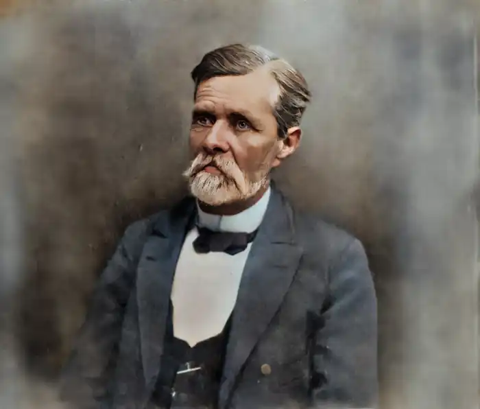
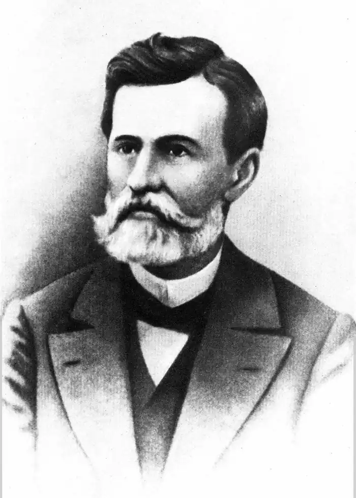
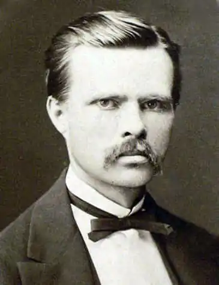
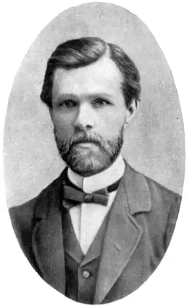

Нечуй-Левицький Іван Семенович
(1838-1918)
письменник, перекладач Іван Семенович Левицький (літературний псевдонім — Нечуй) народився 25 листопада 1838 року в Стеблеві, в сім’ї сільського священика. Батько його був освіченою людиною прогресивних поглядів, мав велику домашню книгозбірню і на власні кошти влаштував школу для селян, в якій його син і навчився читати й писати. Змалку І.Левицький познайомився з історією України з книжок у батьківській бібліотеці. На сьомому році життя хлопця віддали в науку до дядька, який вчителював у духовному училищі при Богуславському монастирі. Там опанував латинську, грецьку та церковнослов’янську мови. Незважаючи на сувору дисципліну, покарання й схоластичні методи викладання, Левицький навчався успішно й після училища в чотирнадцятилітньому віці вступив до Київської духовної семінарії, де навчався з 1853 по 1859 рік. У семінарії захоплювався творами Т.Шевченка, О.Пушкіна та М.Гоголя. Закінчивши семінарію, І.Левицький рік хворів, а потім деякий час працював у Богуславському духовному училищі викладачем церковнослов’янської мови, арифметики та географії. 1861 року Левицький вступає до Київської духовної академії. Не задовольняючись рівнем освіти в академії, вдосконалює свої знання самотужки: вивчає французьку й німецьку мови, читає твори української та російської класики, європейських письменників Данте, Сервантеса, Лесажа та ін., цікавиться творами прогресивних філософів того часу. 1865 року І.Левицький закінчує академію із званням магістра, але відмовляється від духовної кар’єри й викладає російську мову, літературу, історію та географію в Полтавській духовній семінарії (1865—1866), в гімназіях Каліша (1866—1867) та Седлеця (1867—1872). Одночасно з педагогічною діяльністю І.Левицький починає писати. У 60-х роках він написав комедію "Жизнь пропив, долю проспав" і повість "Наймит Яріш Джеря". Працюючи в Полтавській семінарії, він у 1865 році створює повість "Дві московки". Згодом з’явилися оповідання "Панас Круть" та велика стаття "Світогляд українського народу в прикладі до сьогочасності", що побачили світ у львівському журналі "Правда", оскільки через Валуєвський циркуляр 1863 року українська література на Наддніпрянщині була під забороною. З 1873 року І.Левицький працює у Кишинівській чоловічій гімназії викладачем російської словесності, де очолює гурток прогресивно настроєних учителів, які на таємних зібраннях обговорювали гострі національні та соціальні проблеми. У той час І.Левицький, який пропагував у Кишиневі українську літературу, попав під таємний нагляд жандармерії. 1874 року вийшов у світ роман "Хмари", а наступного року — драматичні твори "Маруся Богуславка", "На Кожум’яках" та оповідання "Благословіть бабі Палажці скоропостижно вмерти". Пізніше письменник створює такі шедеври української літератури, як "Микола Джеря" (1878), "Кайдашева сім’я" (1879), "Бурлачка" (1880), "Старосвітські батюшки та матушки" (1884). 1885 року І.Нечуй-Левицький йде у відставку й перебирається до Києва, де присвячує себе виключно літературній праці. У Києві він написав оповідання "Пропащі" (1888) та "Афонський пройдисвіт" (1890), казку "Скривджені" (1892), повість "Поміж порогами" (1893). На початку століття письменник звертається до малих форм прози, пише здебільшого статті, нариси, зокрема статті "Сорок п’яті роковини смерті Тараса Шевченка" (1906) та "Українська поезія". До кінця життя І.Левицький жив майже у злиднях, у маленькій квартирі на Пушкінській вулиці, лише влітку виїздив до родичів у село або в Білу Церкву. До останніх сил працював, щоб завершити літературні праці. Останні дні провів на Дегтярівці, у так званому "шпиталі для одиноких людей", де й помер без догляду 1918 року. Поховано його на Байковому кладовищі. Іван Нечуй-Левицький увійшов в історію української літератури як видатний майстер художньої прози. Створивши ряд високохудожніх соціально-побутових оповідань та повістей, відобразивши в них тяжке життя українського народу другої половини ХIХ століття, показавши життя селянства й заробітчан, злиднями гнаних з рідних осель на фабрики та рибні промисли, І.Нечуй-Левицький увів в українську літературу нові теми й мотиви, змалював їх яскравими художніми засобами. На відміну від своїх попередників — Квітки-Основ’яненка та Марка Вовчка, він докладніше розробляв характери, повніше висвітлював соціальний побут, показував своїх героїв у гострих зіткненнях з соціальними умовами. У пореформений час ускладнювалися суспільні взаємини, виникали нові конфлікти між основними верствами населення. Розвиток капіталізму, пролетаризація селянства, яке заповнювало міста, зумовлювали появу нового типу спролетаризованого селянина та нові суспільні умови його життя в місті. Одне слово, нові умови вимагали появи нових видів і жанрів, які б могли глибше й достеменніше охопити усю складність і розмаїття проявів тогочасного життя. Івана Нечуя-Левицького покликали до письменницької праці муза Шевченка, романи Тургенєва, повісті Гоголя і статті Писарєва. Надто ж поезія Шевченка, з якою він уперше познайомився в журналі "Основа" 1861 року i для якого вперше почав писати оповідання. Але журнал незабаром перестав виходити, і його задум залишився нездійсненим. У цьому невиданому оповіданні він вустами свого героя заявив: "Буду писати вірші, складу віршами книгу, таку, як "Катерина"... Напишу про діда Хтодося... про нещасних, прибитих долею... Про них! Про них!" Це була програма, над якою він працював ціле своє життя. Суспільно-політичні погляди та естетичні смаки Нечуя-Левицького формувалися у 60—70-х роках, в умовах жорстокої реакції і національного гноблення, коли діяв Валуєвський циркуляр про заборону українського слова. Водночас у ті часи інтенсивно розвивався капіталізм, виникають нові суспільно-економічні відносини і суперечності. Реформа 1861 року, формально скасувавши кріпацтво, не полегшила життя селянства, яке страждало від орендарів, промисловців, посесорів. Щоб прогодувати сім’ї, тисячі людей мандрують Росією в пошуках заробітків, скрізь стикаючись із свавіллям чиновників та промисловців, нової буржуазії, яка, так само як і поміщики, гнітила народ. В роки навчання в духовній семінарії І.Нечуй-Левицький у полеміках із студентами виробляв свої стійкі національні погляди на розвиток української нації та культури. Царський уряд устами Валуєва проголосив, що "ніякої особливої малоросійської мови не було, немає і бути не може". Здійснювалися широкі заходи з русифікації населення, заборони книжок та навчання рідною мовою, заборонялася діяльність українських культурних товариств. Нечуй-Левицький, не маючи змоги друкувати свої твори українською мовою на Наддніпрянщині, скориставшись допомогою П.Куліша, публікує у львівському журналі "Правда" статтю "Сьогочасне літературне спрямування" (1878), у якій гостро виступив проти шовіністичної політики російського уряду та деяких російських письменників. Пізніше, 1891 року, у статті "Українство на літературних позвах з Московщиною" він з ще більшою гостротою висловив протест проти гноблення українського народу царизмом. Естетичні погляди І.Нечуя-Левицького, окрім творів красного письменства, формувалися під відчутним впливом народної творчості. І.Франко вважав письменника найвиразнішим представником реалістичної школи. У статті "Сьогочасне літературне спрямування" основними принципами української літератури Нечуй-Левицький проголошує "реальність, народність та національність". Як реаліст, він орієнтувався на осмислення високих життєвих ідеалів і краси життя. Він виступав проти натуралізму, вимагав не копіювати, а узагальнювати явища життя, надихати їх художньою правдою. Письменник орієнтувався на свого вчителя Т.Шевченка, який, поклавши в основу своєї творчості народну пісню, "зумів повести народний епос в щиро народному дусі". Свої погляди на народну творчість Нечуй-Левицький виклав у праці "Світогляд українського народу від давнини до сучасності" (1868), яка й нині є корисним дослідженням у галузі української міфології. В ній письменник аналізує перекази, приказки, вірші, в яких відбито соціальні конфлікти й суперечності в гущі українського народу. Добре знаючи закулісні сторони церковного життя, він гостро критикує в цій праці вияви відступу від християнської моралі та благочестя в середовищі священнослужителів. За півстоліття творчої діяльності І.Нечуй-Левицький написав понад п’ятдесят високохудожніх романів, повістей, оповідань, п’єс, казок, нарисів, гуморесок, літературно-критичних статей. Його повісті "Причепа", "Гориславська ніч", "Дві московки", "Хмари", як згадував І.Франко, "читала вся Мала Русь з великою вподобою". А по-вісті "Кайдашева сім’я" та "Микола Джеря" й нині залишаються серед найкращих творінь української літератури. "Українська жизнь, — писав Нечуй-Левицький, — то непочатий рудник, що лежить десь під землею, хоч за його вже брались і такі високі таланти, як Шевченко; то безконечний матеріал, що тільки ще жде робітників, цілих шкіл робітників на літературному полі". Розквіт творчості письменника припадає на другу половину 70-х — початок 80-х років, коли вийшли його оповіді з народного життя "Микола Джеря", "Бурлачка", "Кайдашева сім’я", "Не можна бабі Парасці вдержатись на селі", "Благословіть бабі Палажці скоропостижно вмерти". У цих справжніх літературних перлинах письменник виявив велику майстерність у змалюванні народних характерів. Своєрідною рисою стилю Нечуя-Левицького є тонке поєднання реалістичної конкретності описів, великої уваги до деталей портретів та особистісних характеристик, побуту, обставин праці, особливостей мови та поведінки персонажів з живописною образністю, емоційністю, тяжінням до яскравих епітетів. Усе це разом ставить твори українського прозаїка в один ряд з творами кращих тогочасних російських та західноєвропейських письменників і виводить українське письменство за межі побутовизму та етнографізму минулої, дошевченківської доби. Однією з питомих рис творчого стилю письменника є його тонкий гумор у так званих антиклерикальних творах. У них, особливо в "Афонському пройдисвіті", він виявляє близькість своїх поглядів до гоголівських, до естетики української байки Григорія Сковороди та Євгена Гребінки. Його сміх і сатира зумовлені життєвими конфліктами й ніколи не мали на меті образу гідності людини, а навпаки, вселяли оптимізм і надію на краще життя. ** ...се переважно буденна мова українського простолюддя, проста, без сліду афектації, але проте багата, колоритна і повна тої природної грації, якою вона визначається в устах людей з багатим життєвим змістом. З огляду на високоартистичне змалювання селянського життя і добру композицію повість належить до найкращих оздоб українського письменства. /**Іван Франко про повість "Кайдашева сім’я".**/